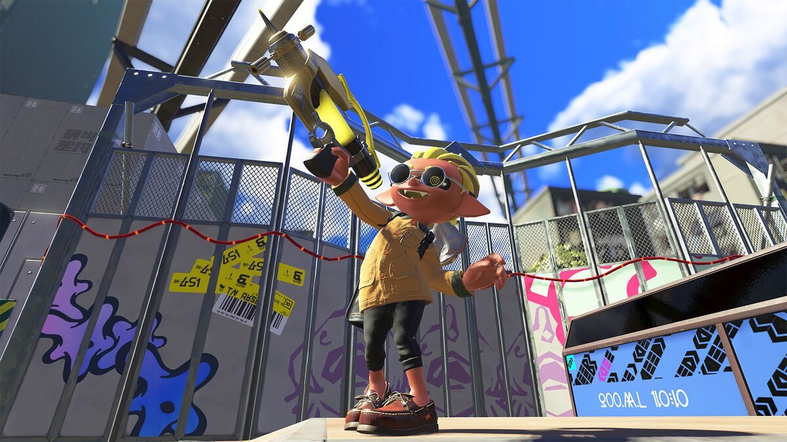

#2: Goo Tuber
Now this may seem a little silly, but the Goo Tuber is currently my most used weapon. Despite being a charger, it does very well at mid range situations. Just swim to store a charge, then wait until you got a clear shot to snipe someone when you least expect it. With torpedos to deal extra damage and tenta missles to get your enemies running, it's reliable in many situations.

#1: Splash-o-matic
Being my most used weapon in Splatoon 3, it's no surprise how this weapon was the entire meta for the first few months of the game. It's a short-ranged weapon but its shots are always straight on and defeats foes very quickly. It truly becomes fun with the Crab Tank, which can shoot as fast as a Hydra Splatling, and takes a lot of damage to destory, great for defense and amazing for offense.